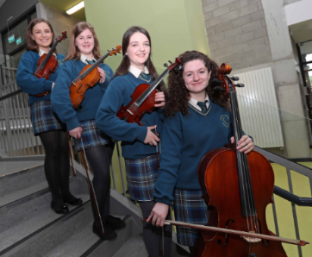

My favourite sport is, without a doubt, swimming. It's a wonderful individual sport that can also incorportate a great sense of team spirit when it
comes to relays and training together. I train a lot less frequently nowadays as I have to devote more and more time to my music studies but I still aim to swim once a week.
Music
Music is my real passion. I play the violin and have done so for the past 14 years. I've been fortunate enough to play with the Cork Symphony Orchestra, the National Youth Orchestra of Ireland and Cork Youth
Orchestra. I've included a video of a music video CYO made with the band Seo Linn. I can even be spotted in the video a couple of times (keep a close eye at the 3 minute mark!)
More Music...

I have a huge passion for chamber music and the picture above shows me with my fellow quartet members when we were in secondary school. I completed my Grade 8 exam in 2016 with a mark of 94
and I am currently studying for a music diploma in violin performance.